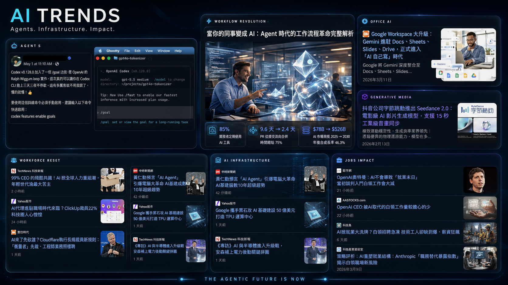

Lesson 01｜AI Work Literacy
AI 已經進場
下一個被改寫的，是你的工作方式。
我們今天不只是學一個新工具。
我們要理解一個新的工作環境，正在形成。
從 ChatGPT 使用者，到 AI 工作者
Opening
這不是未來。
這是現在。
你可能已經用 ChatGPT 寫過信、翻譯、整理資料，甚至解決原本不知道怎麼開始的問題。
但這些只是入口。
找答案
寫東西
解決原本做不到的事
Shift 01
大多數人，只是把 AI 當成比較聰明的 Google。
問一個問題，等一個答案。
這有用，但還只是第一層。
Prompt
資料
初稿
檢查
成果
真正的變化不是 AI 會回答。而是 AI 開始進入工作流程。
Core Question
AI 會改變什麼叫做「會工作」？
當初稿、整理、查找、格式化都變快，新的差距就不在於誰比較會打字。
而在於誰能把問題變成 AI 可以協助完成的任務。
定義問題拆解任務指揮工具驗證結果
Chapter 01
從工具，
到工作夥伴
工具以前等你操作。
AI 開始和你一起思考下一步。
這是第一個關鍵轉變：AI 不只是執行指令，它開始參與思考過程。
Before
以前，工具是被動的。
傳統軟體很強，但它們通常等你先想清楚。
人負責判斷，工具負責執行。
Now
現在，AI 開始主動協作。
你給它會議紀錄，它可以抓出待辦事項。你給它錯誤訊息，它可以推測可能原因。你給它企劃目標，它可以幫你拆出章節、時程與風險。
整理草擬解釋生成檢查拆任務提出下一步
Key Idea
工具以前是手的延伸。
AI 開始變成腦的外掛。
這不代表你可以停止思考。剛好相反，AI 越強，你越需要知道自己要什麼、怎麼問、怎麼判斷。
有結構的人，會被 AI 放大。沒有方向的人，也會被 AI 放大混亂。
Chapter 02
AI 已經改變工作現場
不是所有工作都消失，
而是工作標準正在改變。
以前做到 60 分可能就能交差。未來 AI 會讓更多人快速做到 60 分，真正的差距會出現在 60 分之後。
行政 / 文書
Programming
一般職場工作者
Admin / Documents
行政不只是處理文件，
而是管理資訊流。
誰說了什麼？事情進度到哪？哪個文件是最新版？哪個客戶還沒回？行政工作的核心，其實常常是讓混亂資訊變得可追蹤、可交接、可執行。
會議紀錄Email 草稿公告與 SOP資料分類文件比對知識庫初稿
Value Shift
以前看速度，未來看流程設計能力。
AI 會讓基礎產出變快。所以人的價值會從「把文件做完」，轉向「把流程設計好」。
以前
細心
速度
格式正確
資料整理
AI 時代
資訊結構
文件流程
SOP
模板化
錯誤檢查
Programming
AI 可以幫你寫 code，
但不能替你理解系統。
程式不是只要能跑就好。它還牽涉到資料、邏輯、邊界條件、維護性、安全性、效能，以及需求是否真的被解決。
解釋錯誤產生範例重構程式寫測試讀懂專案API 文件協助除錯
Programming Skills
會寫 code 不夠，
還要會判斷 code。
初階語法記憶的價值會下降，但理解能力會變得更重要。你要能看懂需求、拆解邏輯，也要能判斷 AI 寫的 code 是不是只是看起來合理。
if (aiOutput.looksRight) {
verify(requirements, logic, data, risk);
}Workflow
未來不是誰比較會打字，
而是誰比較會指揮。
大多數工作都包含資訊處理：讀資料、寫文件、溝通、整理想法、做決策、交付成果。AI 可以幫你做初稿，但你要學會把工作拆成步驟。
寫信摘要會議整理簡報初稿資料分析教學文件專案規劃創意發想
Chapter 03
最近的大新聞，
不只是新聞。
它們其實是四個訊號。
AI 新聞不是一件件孤立事件。它們合在一起，代表 AI 正在變成新的工作基礎設施。
AgentOffice AIGenerative MediaWorkforce Reset

Signal 01｜Agent
AI 不只回答，
而是開始追著目標跑。
Agent 的方向是：你給它一個目標，它幫你拆步驟、操作工具、整理結果。這代表我們正在從「搜尋資訊」，走向「委託任務」。
以前
「幫我查一下資料。」
未來
「幫我整理信件、排出優先順序、草擬回覆。」
Developer Signal
Codex /goal
讓 AI 朝長時間任務前進，不再只是一次問答。
$ codex /goaltrack objective → plan → run → verify
Workflow Signal
Agent 工作流革命
研究、寫作、客服、分析與程式開發都會被重新拆解。
Signal 02｜Office AI
AI 不會只存在 ChatGPT 裡。
未來你不一定要特別打開 ChatGPT，才叫做使用 AI。AI 會出現在你每天工作的地方，變成軟體裡的底層能力。
Office Signal
Google Workspace Gemini
AI 進駐 Docs、Sheets、Slides、Drive。它不是另一個網站，而是你每天工作的介面。
DocsSheetsSlidesDrive
Signal 03 + 04
初稿變便宜，
判斷變昂貴。
文字、圖片、影片、程式、簡報，越來越多內容都能由 AI 產生初稿。當第一版變便宜，人類的價值就會往判斷、整合、風格、責任與決策移動。
60% 初稿工作
40% 判斷與責任
Generative Media
AI 影片生成
內容的第一版正在變便宜。
Workforce Reset
企業人力重組
哪些工作真的需要人做？
AI Infrastructure
晶片與資料中心
AI 不是一個 App，而是一層新基礎建設。
Chapter 04
從賣時間，
到賣成果。
AI 時代，最貴的不是時間。
而是判斷力。
當很多任務變快，市場會越來越重視你能交付什麼，而不是你花了多久。
Old Model
舊模式：公司買你的時間。
過去很多工作，本質上是投入時間換取產出。做得久，代表有經驗；做得多，代表有工作量。
New Model
新模式：
你能交付什麼？
AI 會讓更多人快速做出初稿。真正的差距會變成：你能不能把模糊需求整理清楚，並交付有用的成果。
更快完成初稿放大產出一人多任務跨領域協作模糊需求 → 可執行流程
Chapter 05
人還剩下什麼？
AI 的問題，最後會變成人的問題。
AI 不只是技術問題。它會改變我們怎麼看待能力、學習、創作、工作價值，甚至是自我定位。
Human Question
當 AI 也會做，
我們如何定義能力？
如果 AI 會寫文章，什麼叫會表達？
如果 AI 會寫程式，什麼叫會 programming？
如果 AI 可以快速給答案，什麼叫真正學會？
如果所有人都有 AI，為什麼有些人還是會更強？
答案不是「人不用學了」。而是學習的重點，會從記憶答案，轉向理解、判斷、提問與負責。
Gap
AI 會放大人的能力，
也會放大人的差距。
同一個工具，在不同人手上，效果會差很多。有些人拿到答案就相信；有些人會驗證、追問、比較、修正。
問問題拆任務驗證結果設計流程知道自己想完成什麼
Chapter 06
我們要準備的，
不是更多工具。
而是新的工作能力。
工具會一直變。真正留下來的，是你如何提問、整理、判斷、驗證，並把工具接進自己的流程。
Preparation
五個準備方向
這五件事，會決定你只是使用 AI，還是能真正把 AI 變成工作能力。
Prompt 能力
資訊整理能力
基礎資訊知識
驗證能力
工作流設計能力
不是背咒語，而是清楚表達需求。不是收集工具，而是建立可重複使用的流程。
Information Literacy
只會問 ChatGPT，最多是使用者。
懂一點資訊概念，才會變成 AI 指揮者。
你不一定要成為工程師。但你需要懂一點資料、格式、流程、工具與風險，才知道 AI 可以怎麼被正確使用。
Closing Insight
未來的競爭力，
是學習力與創造力。
AI 會讓知識取得變快，但真正拉開差距的，是誰能快速學習、持續創造，並把想法變成作品。
Next Class
下次課程準備
下一堂課，我們會開始把 AI、網站、資料與工具流程連起來。你不需要先學會，但可以先建立基本概念。
請準備
電腦，優先
平板，可輔助
Google / GitHub 帳號
穩定網路
筆記工具
先預習
前端是什麼？
後端是什麼？
API 是什麼？
靜態網頁 vs 動態網頁
Manifesto
The Future of Work
is not AI.
It is Humans who know
how to work with AI.
未來的工作，不是 AI 取代人。
而是懂得與 AI 工作的人，重新定義工作。
會用 ChatGPT，只是入口。真正重要的是，把 AI 放進工作流程，讓它幫你整理資訊、產生初稿、檢查錯誤、加速學習，最後做出更好的成果。
Next｜AI 工作者的基礎能力